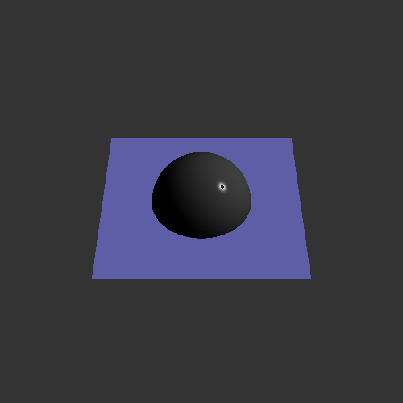

David Koh
dkoh7
Computer Graphics 600.357
Used gcc compiler on Ubuntu, using vim.
Late Days Used: 5
Hello, I was unable to have a completely working project in the end,
and it was to the point where my code did not display anything.
However, my code does compile.
I had to manually print EVERYTHING to make sure functions were working
since I couldn't see anything.
I had very big issues with rayGroup.todo.cpp and rayScene.todo.cpp,
so I recommend checking to see where my issues were there.
Here are some samples that I had displaying:
|  | ||
--Circle |
--Color |
--Light |